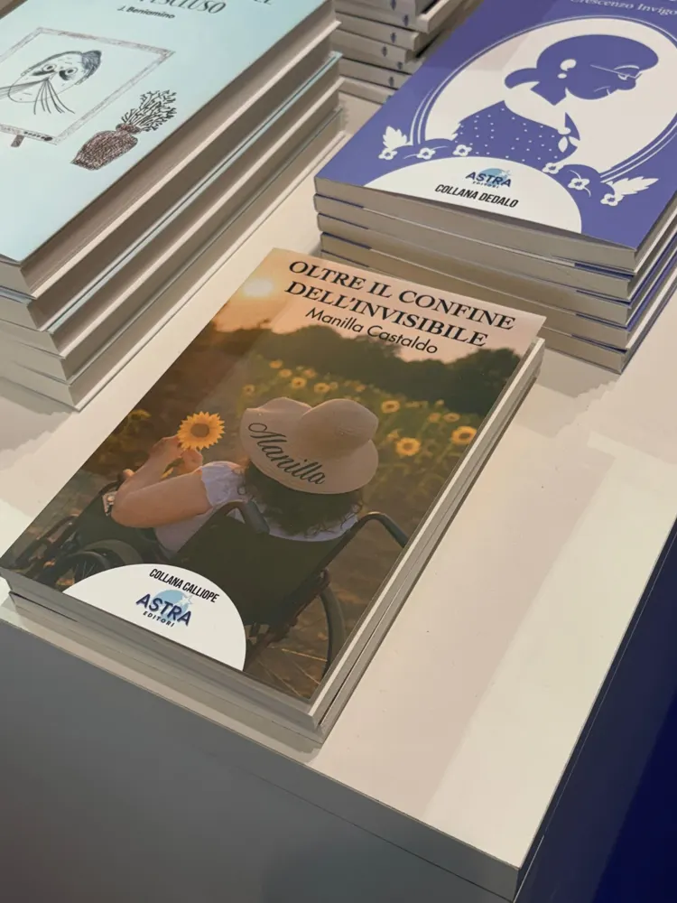
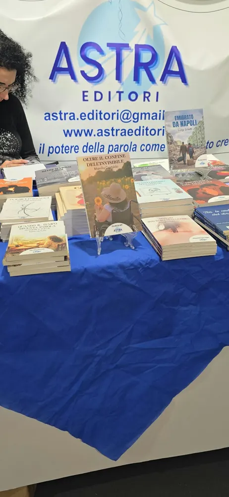
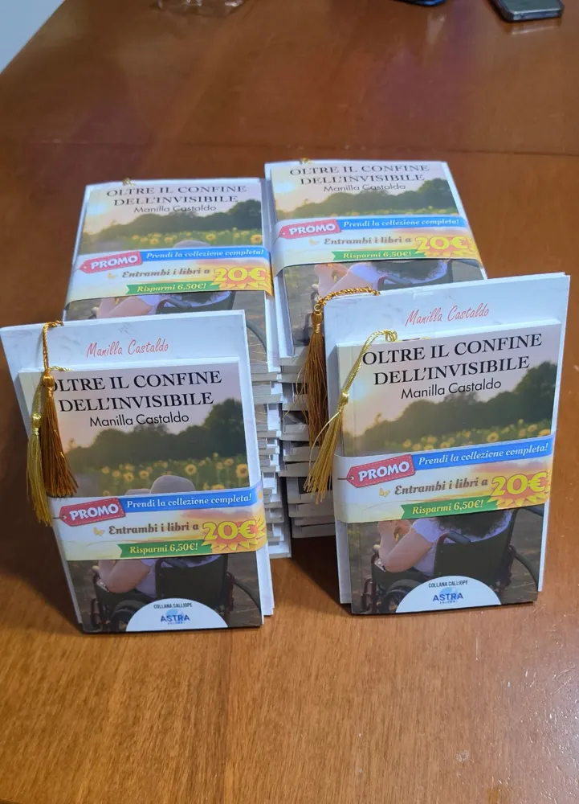
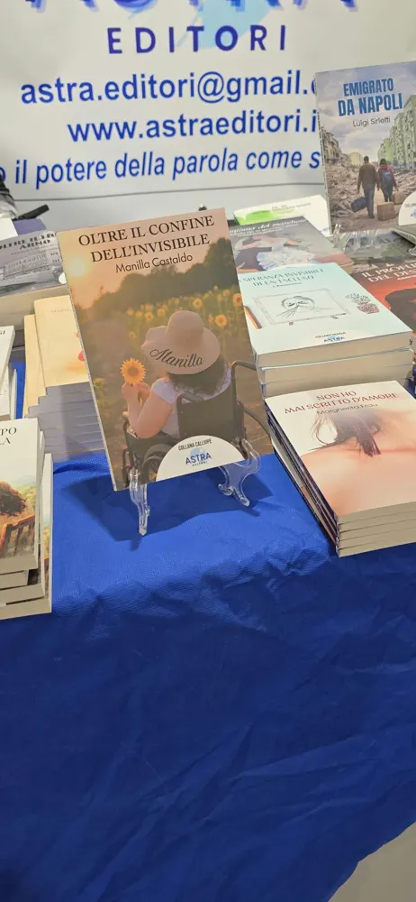
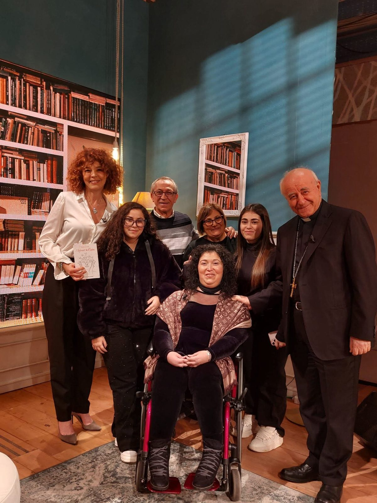
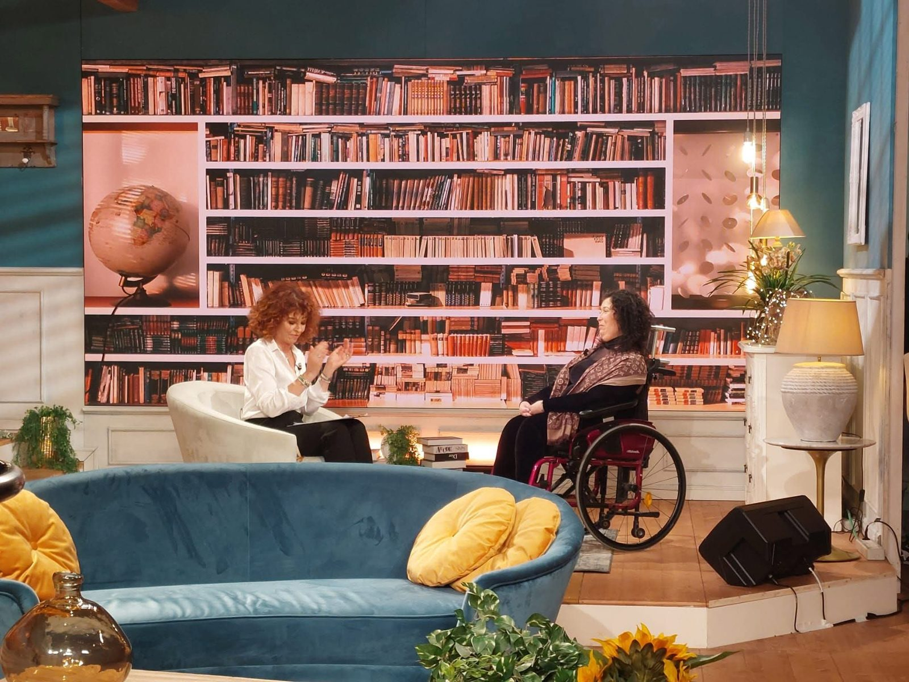
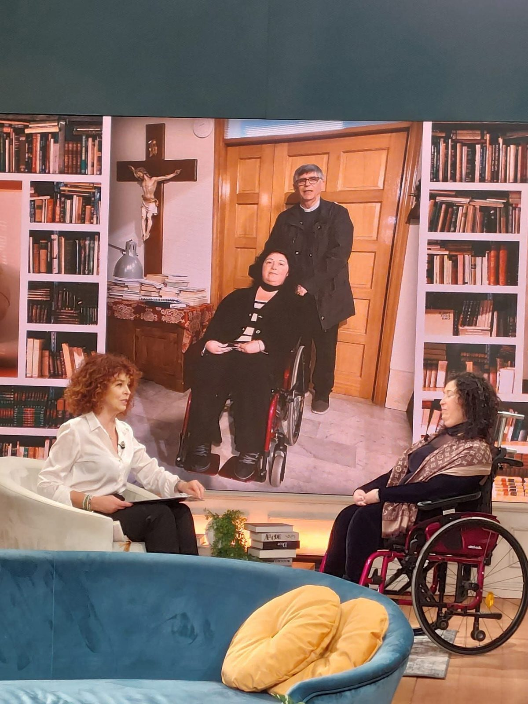

TV2000 · L'Ora Solare · 15 gennaio 2025
Un regalo per Manilla
Il Mondo di
Baby Pepita
Stiamo arrivando
Stiamo preparando, con tutto il cuore, un piccolo mondo fatto di parole, sorrisi e storie che sanno andare oltre il confine dell'invisibile. Ancora un po' di pazienza: la porta sta per aprirsi.
Oltre il confine dell'invisibile
Il libro di Manilla, tra le pagine e gli incontri di questi giorni




Poesie e opere
Le poesie e i libri di Manilla, raccolti in una pagina
Poesie e opereDicono di lei
Interviste e racconti dedicati a Manilla



“Ogni grande avventura comincia con un piccolo passo.
Il nostro sta per arrivare.”